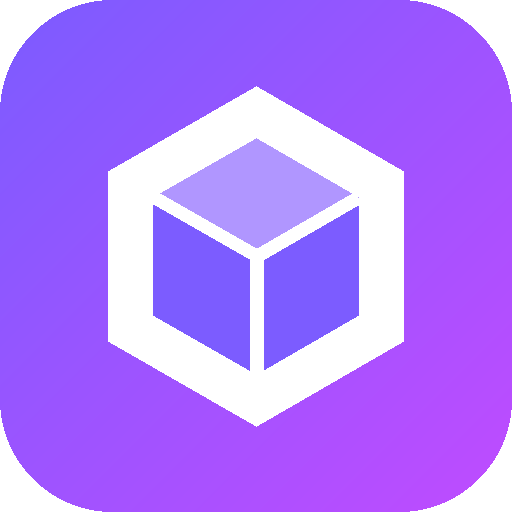

PodDeckLooking for PodDeck...
PodDeck is the control panel for Podman containers. It's a small program that has to be running first.
No icon? Open a Terminal and type:bash ~/Desktop/"My Apps"/apps/poddeck/install.sh
PodDeck is for the Raspberry Pi (64-bit Raspberry Pi OS). It doesn't run on Windows.
This page keeps checking and jumps to PodDeck as soon as it's running.